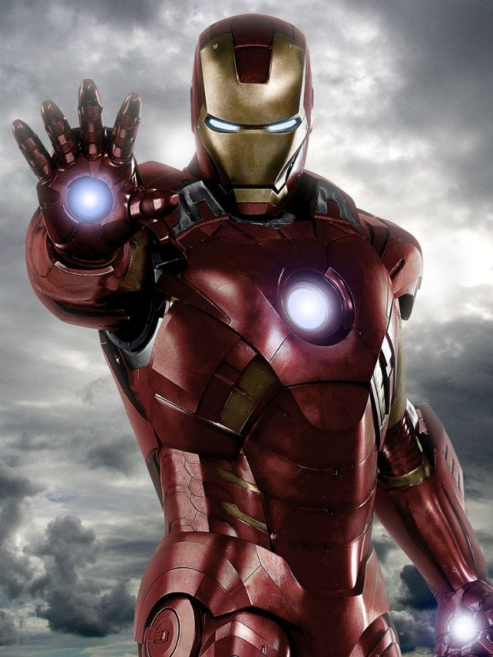

Anthony "Tony" Stark nació de Howard Anthony Stark y Maria Collins Carbonell Stark , propietarios de la destacada firma estadounidense Stark Industries. Cuando era niño, Tony estaba fascinado con la construcción y el control de máquinas. A la edad de 15 años, Tony ingresó al programa de ingeniería eléctrica en el Massachusetts Institute of Technology (MIT) y se graduó con dos maestrías a los 19 años. Tony se fue a trabajar para Stark Industries, pero mostró más interés en vivir un estilo playboy imprudente. que usar sus habilidades de ingeniería. A la edad de 21 años, Tony heredó Stark Enterprisescuando sus padres murieron en un accidente automovilístico orquestado secretamente por la empresa rival Republic Oil (más tarde ROXXON). Todavía carente de perspicacia para los negocios, Tony promovió a la secretaria Virginia "Pepper" Potts para que fuera su asistente ejecutiva y le dejó la mayor parte de su carga de trabajo para que pudiera evitar lo que consideraba una carga.
Tony asistió personalmente a una prueba de campo de su equipo militar en una de sus plantas internacionales; sin embargo, poco después de su llegada, el grupo de Stark fue atacado por una banda de terroristas liderada por el revolucionario Sin-Cong Wong Chu.. Durante la escaramuza, una mina terrestre explotó y colocó un pedazo de metralla cerca del corazón de Tony. Volviendo al campamento de Wong-Chu, Tony compartió una celda con el profesor Ho Yinsen, un físico de fama mundial. Wong-Chu exigió que los dos científicos desarrollaran armamento avanzado para sus fuerzas. Sabiendo que no podría vivir mucho tiempo con la metralla tan cerca de su corazón, Tony propuso que él y Yinsen dedicaran sus dones a crear uno de los trajes de batalla que había estado desarrollando, equipado con un generador de campo magnético para evitar que la metralla llegara a su corazón . La armadura que crearon se convirtió en la primera verdadera armadura de Iron Man y estaba equipada con armas magnéticas brutas para la defensa. Mientras la batería de la armadura estaba siendo alimentada, algunos de los hombres de Wong-Chu intentaron entrar en el proceso. Yinsen fue a crear una distracción y fue asesinado a tiros por los hombres de Wong-Chu. Cuando la batería terminó de cargar, Tony entró en la batalla como Iron Man y desmanteló el campamento de Wong-Chu. Finalmente regresó a los Estados Unidos con la ayuda de la Marina de los EE. UU.James "Rhodey" Rhodes.Tony le ofreció a Rhodey un trabajo en su compañía si alguna vez lo necesitara.
Al principio, Tony encontró su nueva vida un tormento; la placa de pecho de su armadura debía usarse constantemente y requería una recarga frecuente. Mantuvo la armadura en secreto de todos, incluida su prometida, Joanna Nivena. Convirtiéndose en un suicida y bebiendo mucho, Tony fue apoyado por Joanna, con quien compartió su identidad secreta. Joanna lo animó a utilizar su armadura como un súper héroe, pero al final canceló el compromiso sabiendo que Tony no sería el hombre de familia que ella deseaba.
Durante estos primeros años como un súper héroe, Iron Man luchó contra el mandarín , Hawkeye y la viuda negra (Natasha Romanova) .
